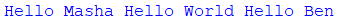

Python |
Содержание |
Уроки по изучению языка программирования Python |
||||||||||||||||||
Консольный ввод и выводВывод на консольДля вывода информации на консоль предназначена встроенная функция print(). При вызове этой функции ей в скобках передается выводимое значение:
Данный код выведет нам на консоль строку "Hello Masha". Отличительной особенностью этой функции является то, что по умолчанию она выводит значение на отдельной строке. Например:
Здесь три вызова функции print() выводят некоторое сообщение. Причем при выводе на консоль каждое сообщение будет размещаться на отдельной строке: Такое поведение не всегда удобно. Например, мы хотим, чтобы все значения выводились на одной строке. Для этого нам надо настроить поведение функции с помощью параметра end. Этот параметр задает символы, которые добавляются в конце к выводимой строке и . При применении параметра end вызов функции print() выглядит следующим образом:
По умолчанию end равен символу "\n", который задает перевод на следующую строку. Собственно поэтому функция print по умолчанию выводит передаваемое ей значение на отдельной строке. Теперь определим, чтобы функция не делала перевод на следующую строку, а выводила значение на той же строке:
То есть теперь выводимые значения будут разделяться пробелом: Причем это может быть не один символ, а набор символов:
В данном случае выводимые сообщения будут отделяться символами " and ": Консольный вводНаряду с выводом на консоль мы можем получать ввод пользователя с консоли, получать вводимые данные. Для этого в Python определена функция input(). В эту функцию передается приглашение к вводу. А результат ввода мы можем сохранить в переменную. Например, определим код для ввода пользователем имени:
В данном случае в функцию input() передается приглашение к вводу в виде строки "Введите свое имя: ". Результат функции - результат ввода пользователя передается в переменную name. Затем мы можем вывести значение этой переменной на консоль с помощью функции print(). Пример работы кода: Еще пример с вводом нескольких значений:
Пример работы программы: Стоит учитывать, что все введенные значения рассматриваются как значения типа str, то есть строки. И даже если мы вводим число, как в втором случае в коде выше, то Python все равно будет рассматривать введенное значение как строку, а не как число.
|